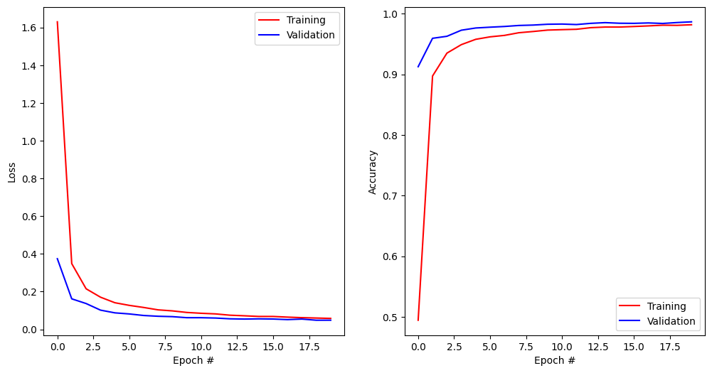

#!pip install ANNarchyANN-to-SNN conversion - CNN


This notebook demonstrates how to transform a CNN trained using tensorflow/keras into an SNN network usable in ANNarchy.
The CNN is adapted from the original model used in:
Diehl et al. (2015) “Fast-classifying, high-accuracy spiking deep networks through weight and threshold balancing” Proceedings of IJCNN. doi: 10.1109/IJCNN.2015.7280696
import numpy as np
import matplotlib.pyplot as plt
import tensorflow as tf
print(f"Tensorflow {tf.__version__}")2026-07-22 07:25:09.859697: E external/local_xla/xla/stream_executor/cuda/cuda_fft.cc:485] Unable to register cuFFT factory: Attempting to register factory for plugin cuFFT when one has already been registered
2026-07-22 07:25:09.881473: E external/local_xla/xla/stream_executor/cuda/cuda_dnn.cc:8454] Unable to register cuDNN factory: Attempting to register factory for plugin cuDNN when one has already been registered
2026-07-22 07:25:09.888083: E external/local_xla/xla/stream_executor/cuda/cuda_blas.cc:1452] Unable to register cuBLAS factory: Attempting to register factory for plugin cuBLAS when one has already been registered
2026-07-22 07:25:09.904979: I tensorflow/core/platform/cpu_feature_guard.cc:210] This TensorFlow binary is optimized to use available CPU instructions in performance-critical operations.
To enable the following instructions: AVX2 FMA, in other operations, rebuild TensorFlow with the appropriate compiler flags.
2026-07-22 07:25:10.818284: W tensorflow/compiler/tf2tensorrt/utils/py_utils.cc:38] TF-TRT Warning: Could not find TensorRTTensorflow 2.17.0# Download data
(X_train, t_train), (X_test, t_test) = tf.keras.datasets.mnist.load_data()
# Normalize inputs
X_train = X_train.astype('float32') / 255.
X_test = X_test.astype('float32') / 255.
# One-hot output vectors
T_train = tf.keras.utils.to_categorical(t_train, 10)
T_test = tf.keras.utils.to_categorical(t_test, 10)Training an ANN in tensorflow/keras
The tensorflow.keras convolutional network is built using the functional API.
The CNN has three 5*5 convolutional layers with ReLU, each followed by 2*2 max-pooling, no bias, dropout at 0.25, and a softmax output layer with 10 neurons. We use the standard SGD optimizer and the categorical crossentropy loss for classification.
def create_cnn():
inputs = tf.keras.Input(shape = (28, 28, 1))
x = tf.keras.layers.Conv2D(
16,
kernel_size=(5,5),
activation='relu',
padding = 'same',
use_bias=False)(inputs)
x = tf.keras.layers.MaxPooling2D(pool_size=(2, 2))(x)
x = tf.keras.layers.Conv2D(
64,
kernel_size=(5,5),
activation='relu',
padding = 'same',
use_bias=False)(x)
x = tf.keras.layers.MaxPooling2D(pool_size=(2, 2))(x)
x = tf.keras.layers.Conv2D(
64,
kernel_size=(5,5),
activation='relu',
padding = 'same',
use_bias=False)(x)
x = tf.keras.layers.MaxPooling2D(pool_size=(2, 2))(x)
x = tf.keras.layers.Dropout(0.25)(x)
x = tf.keras.layers.Flatten()(x)
x = tf.keras.layers.Dense(
10,
activation='softmax',
use_bias=False)(x)
# Create functional model
model= tf.keras.Model(inputs, x)
optimizer = tf.keras.optimizers.SGD(learning_rate=0.01)
# Loss function
model.compile(
loss='categorical_crossentropy', # loss function
optimizer=optimizer, # learning rule
metrics=['accuracy'] # show accuracy
)
print(model.summary())
return model# Create model
model = create_cnn()
# Train model
history = model.fit(
X_train, T_train, # training data
batch_size=128, # batch size
epochs=20, # Maximum number of epochs
validation_split=0.1, # Percentage of training data used for validation
verbose=2)
model.save("runs/cnn.keras")
# Test model
predictions_keras = model.predict(X_test, verbose=0)
test_loss, test_accuracy = model.evaluate(X_test, T_test, verbose=0)
print(f"Test accuracy: {test_accuracy}")WARNING: All log messages before absl::InitializeLog() is called are written to STDERR
I0000 00:00:1784697912.022864 4097367 cuda_executor.cc:1015] successful NUMA node read from SysFS had negative value (-1), but there must be at least one NUMA node, so returning NUMA node zero. See more at https://github.com/torvalds/linux/blob/v6.0/Documentation/ABI/testing/sysfs-bus-pci#L344-L355
I0000 00:00:1784697912.023220 4097367 cuda_executor.cc:1015] successful NUMA node read from SysFS had negative value (-1), but there must be at least one NUMA node, so returning NUMA node zero. See more at https://github.com/torvalds/linux/blob/v6.0/Documentation/ABI/testing/sysfs-bus-pci#L344-L355
2026-07-22 07:25:12.067311: W tensorflow/core/common_runtime/gpu/gpu_device.cc:2343] Cannot dlopen some GPU libraries. Please make sure the missing libraries mentioned above are installed properly if you would like to use GPU. Follow the guide at https://www.tensorflow.org/install/gpu for how to download and setup the required libraries for your platform.
Skipping registering GPU devices...Model: "functional"
┏━━━━━━━━━━━━━━━━━━━━━━━━━━━━━━━━━┳━━━━━━━━━━━━━━━━━━━━━━━━┳━━━━━━━━━━━━━━━┓ ┃ Layer (type) ┃ Output Shape ┃ Param # ┃ ┡━━━━━━━━━━━━━━━━━━━━━━━━━━━━━━━━━╇━━━━━━━━━━━━━━━━━━━━━━━━╇━━━━━━━━━━━━━━━┩ │ input_layer (InputLayer) │ (None, 28, 28, 1) │ 0 │ ├─────────────────────────────────┼────────────────────────┼───────────────┤ │ conv2d (Conv2D) │ (None, 28, 28, 16) │ 400 │ ├─────────────────────────────────┼────────────────────────┼───────────────┤ │ max_pooling2d (MaxPooling2D) │ (None, 14, 14, 16) │ 0 │ ├─────────────────────────────────┼────────────────────────┼───────────────┤ │ conv2d_1 (Conv2D) │ (None, 14, 14, 64) │ 25,600 │ ├─────────────────────────────────┼────────────────────────┼───────────────┤ │ max_pooling2d_1 (MaxPooling2D) │ (None, 7, 7, 64) │ 0 │ ├─────────────────────────────────┼────────────────────────┼───────────────┤ │ conv2d_2 (Conv2D) │ (None, 7, 7, 64) │ 102,400 │ ├─────────────────────────────────┼────────────────────────┼───────────────┤ │ max_pooling2d_2 (MaxPooling2D) │ (None, 3, 3, 64) │ 0 │ ├─────────────────────────────────┼────────────────────────┼───────────────┤ │ dropout (Dropout) │ (None, 3, 3, 64) │ 0 │ ├─────────────────────────────────┼────────────────────────┼───────────────┤ │ flatten (Flatten) │ (None, 576) │ 0 │ ├─────────────────────────────────┼────────────────────────┼───────────────┤ │ dense (Dense) │ (None, 10) │ 5,760 │ └─────────────────────────────────┴────────────────────────┴───────────────┘
Total params: 134,160 (524.06 KB)
Trainable params: 134,160 (524.06 KB)
Non-trainable params: 0 (0.00 B)
None
Epoch 1/20
422/422 - 10s - 24ms/step - accuracy: 0.4944 - loss: 1.6298 - val_accuracy: 0.9125 - val_loss: 0.3744
Epoch 2/20
422/422 - 10s - 23ms/step - accuracy: 0.8971 - loss: 0.3485 - val_accuracy: 0.9593 - val_loss: 0.1618
Epoch 3/20
422/422 - 10s - 23ms/step - accuracy: 0.9349 - loss: 0.2151 - val_accuracy: 0.9627 - val_loss: 0.1369
Epoch 4/20
422/422 - 10s - 23ms/step - accuracy: 0.9489 - loss: 0.1706 - val_accuracy: 0.9727 - val_loss: 0.1020
Epoch 5/20
422/422 - 10s - 23ms/step - accuracy: 0.9576 - loss: 0.1412 - val_accuracy: 0.9763 - val_loss: 0.0875
Epoch 6/20
422/422 - 9s - 22ms/step - accuracy: 0.9617 - loss: 0.1272 - val_accuracy: 0.9777 - val_loss: 0.0818
Epoch 7/20
422/422 - 9s - 22ms/step - accuracy: 0.9641 - loss: 0.1161 - val_accuracy: 0.9788 - val_loss: 0.0736
Epoch 8/20
422/422 - 10s - 23ms/step - accuracy: 0.9685 - loss: 0.1034 - val_accuracy: 0.9805 - val_loss: 0.0695
Epoch 9/20
422/422 - 9s - 22ms/step - accuracy: 0.9706 - loss: 0.0980 - val_accuracy: 0.9812 - val_loss: 0.0674
Epoch 10/20
422/422 - 9s - 22ms/step - accuracy: 0.9729 - loss: 0.0897 - val_accuracy: 0.9825 - val_loss: 0.0619
Epoch 11/20
422/422 - 10s - 23ms/step - accuracy: 0.9736 - loss: 0.0853 - val_accuracy: 0.9828 - val_loss: 0.0618
Epoch 12/20
422/422 - 9s - 22ms/step - accuracy: 0.9742 - loss: 0.0820 - val_accuracy: 0.9820 - val_loss: 0.0600
Epoch 13/20
422/422 - 10s - 23ms/step - accuracy: 0.9769 - loss: 0.0751 - val_accuracy: 0.9840 - val_loss: 0.0560
Epoch 14/20
422/422 - 10s - 23ms/step - accuracy: 0.9779 - loss: 0.0719 - val_accuracy: 0.9852 - val_loss: 0.0546
Epoch 15/20
422/422 - 10s - 23ms/step - accuracy: 0.9779 - loss: 0.0685 - val_accuracy: 0.9842 - val_loss: 0.0558
Epoch 16/20
422/422 - 10s - 23ms/step - accuracy: 0.9788 - loss: 0.0684 - val_accuracy: 0.9840 - val_loss: 0.0548
Epoch 17/20
422/422 - 10s - 23ms/step - accuracy: 0.9798 - loss: 0.0649 - val_accuracy: 0.9847 - val_loss: 0.0517
Epoch 18/20
422/422 - 9s - 22ms/step - accuracy: 0.9809 - loss: 0.0621 - val_accuracy: 0.9838 - val_loss: 0.0546
Epoch 19/20
422/422 - 10s - 23ms/step - accuracy: 0.9807 - loss: 0.0601 - val_accuracy: 0.9853 - val_loss: 0.0485
Epoch 20/20
422/422 - 10s - 23ms/step - accuracy: 0.9817 - loss: 0.0581 - val_accuracy: 0.9865 - val_loss: 0.0486
Test accuracy: 0.9861999750137329plt.figure(figsize=(12, 6))
plt.subplot(121)
plt.plot(history.history['loss'], '-r', label="Training")
plt.plot(history.history['val_loss'], '-b', label="Validation")
plt.xlabel('Epoch #')
plt.ylabel('Loss')
plt.legend()
plt.subplot(122)
plt.plot(history.history['accuracy'], '-r', label="Training")
plt.plot(history.history['val_accuracy'], '-b', label="Validation")
plt.xlabel('Epoch #')
plt.ylabel('Accuracy')
plt.legend()
plt.show()
Initialize the ANN-to-SNN converter
We now create an instance of the ANN-to-SNN conversion object.
from ANNarchy.extensions.ann_to_snn_conversion import ANNtoSNNConverter
snn_converter = ANNtoSNNConverter(
input_encoding='IB',
hidden_neuron='IaF',
read_out='spike_count',
)ANNarchy 5.0 (5.0.3) on linux (posix).net = snn_converter.load_keras_model("runs/cnn.keras", show_info=True)WARNING: Dense representation is an experimental feature for spiking models, we greatly appreciate bug reports.
* Input layer: input_layer, (28, 28, 1)
* InputLayer skipped.
* Conv2D layer: conv2d, (28, 28, 16)
* MaxPooling2D layer: max_pooling2d, (14, 14, 16)
* Conv2D layer: conv2d_1, (14, 14, 64)
* MaxPooling2D layer: max_pooling2d_1, (7, 7, 64)
* Conv2D layer: conv2d_2, (7, 7, 64)
* MaxPooling2D layer: max_pooling2d_2, (3, 3, 64)
* Dropout skipped.
* Flatten skipped.
* Dense layer: dense, 10
weights: (10, 576)
mean -0.0008348533883690834, std 0.06895431131124496
min -0.2016230821609497, max 0.21691066026687622
predictions_snn = snn_converter.predict(X_test[:300], duration_per_sample=200) 0%| | 0/300 [00:00<?, ?it/s] 0%|▎ | 1/300 [00:02<12:50, 2.58s/it] 1%|▌ | 2/300 [00:05<12:48, 2.58s/it] 1%|▊ | 3/300 [00:07<12:45, 2.58s/it] 1%|█ | 4/300 [00:10<12:43, 2.58s/it] 2%|█▎ | 5/300 [00:12<12:41, 2.58s/it] 2%|█▌ | 6/300 [00:15<12:38, 2.58s/it] 2%|█▉ | 7/300 [00:18<12:36, 2.58s/it] 3%|██▏ | 8/300 [00:20<12:35, 2.59s/it] 3%|██▍ | 9/300 [00:23<12:34, 2.59s/it] 3%|██▋ | 10/300 [00:25<12:33, 2.60s/it] 4%|██▉ | 11/300 [00:28<12:32, 2.60s/it] 4%|███▏ | 12/300 [00:31<12:30, 2.61s/it] 4%|███▍ | 13/300 [00:33<12:28, 2.61s/it] 5%|███▋ | 14/300 [00:36<12:26, 2.61s/it] 5%|████ | 15/300 [00:38<12:23, 2.61s/it] 5%|████▎ | 16/300 [00:41<12:20, 2.61s/it] 6%|████▌ | 17/300 [00:44<12:16, 2.60s/it] 6%|████▊ | 18/300 [00:46<12:13, 2.60s/it] 6%|█████ | 19/300 [00:49<12:10, 2.60s/it] 7%|█████▎ | 20/300 [00:51<12:06, 2.60s/it] 7%|█████▌ | 21/300 [00:54<12:03, 2.59s/it] 7%|█████▊ | 22/300 [00:57<12:00, 2.59s/it] 8%|██████▏ | 23/300 [00:59<11:57, 2.59s/it] 8%|██████▍ | 24/300 [01:02<11:54, 2.59s/it] 8%|██████▋ | 25/300 [01:04<11:50, 2.58s/it] 9%|██████▉ | 26/300 [01:07<11:48, 2.59s/it] 9%|███████▏ | 27/300 [01:09<11:45, 2.58s/it] 9%|███████▍ | 28/300 [01:12<11:42, 2.58s/it] 10%|███████▋ | 29/300 [01:15<11:40, 2.58s/it] 10%|████████ | 30/300 [01:17<11:37, 2.58s/it] 10%|████████▎ | 31/300 [01:20<11:34, 2.58s/it] 11%|████████▌ | 32/300 [01:22<11:30, 2.58s/it] 11%|████████▊ | 33/300 [01:25<11:28, 2.58s/it] 11%|█████████ | 34/300 [01:28<11:26, 2.58s/it] 12%|█████████▎ | 35/300 [01:30<11:23, 2.58s/it] 12%|█████████▌ | 36/300 [01:33<11:21, 2.58s/it] 12%|█████████▊ | 37/300 [01:35<11:18, 2.58s/it] 13%|██████████▏ | 38/300 [01:38<11:15, 2.58s/it] 13%|██████████▍ | 39/300 [01:40<11:12, 2.58s/it] 13%|██████████▋ | 40/300 [01:43<11:10, 2.58s/it] 14%|██████████▉ | 41/300 [01:46<11:07, 2.58s/it] 14%|███████████▏ | 42/300 [01:48<11:05, 2.58s/it] 14%|███████████▍ | 43/300 [01:51<11:02, 2.58s/it] 15%|███████████▋ | 44/300 [01:53<10:59, 2.58s/it] 15%|████████████ | 45/300 [01:56<10:57, 2.58s/it] 15%|████████████▎ | 46/300 [01:58<10:54, 2.58s/it] 16%|████████████▌ | 47/300 [02:01<10:51, 2.58s/it] 16%|████████████▊ | 48/300 [02:04<10:50, 2.58s/it] 16%|█████████████ | 49/300 [02:06<10:49, 2.59s/it] 17%|█████████████▎ | 50/300 [02:09<10:47, 2.59s/it] 17%|█████████████▌ | 51/300 [02:11<10:43, 2.58s/it] 17%|█████████████▊ | 52/300 [02:14<10:40, 2.58s/it] 18%|██████████████▏ | 53/300 [02:17<10:37, 2.58s/it] 18%|██████████████▍ | 54/300 [02:19<10:34, 2.58s/it] 18%|██████████████▋ | 55/300 [02:22<10:32, 2.58s/it] 19%|██████████████▉ | 56/300 [02:24<10:29, 2.58s/it] 19%|███████████████▏ | 57/300 [02:27<10:26, 2.58s/it] 19%|███████████████▍ | 58/300 [02:29<10:23, 2.58s/it] 20%|███████████████▋ | 59/300 [02:32<10:21, 2.58s/it] 20%|████████████████ | 60/300 [02:35<10:18, 2.58s/it] 20%|████████████████▎ | 61/300 [02:37<10:15, 2.58s/it] 21%|████████████████▌ | 62/300 [02:40<10:13, 2.58s/it] 21%|████████████████▊ | 63/300 [02:42<10:10, 2.58s/it] 21%|█████████████████ | 64/300 [02:45<10:08, 2.58s/it] 22%|█████████████████▎ | 65/300 [02:48<10:05, 2.58s/it] 22%|█████████████████▌ | 66/300 [02:50<10:02, 2.58s/it] 22%|█████████████████▊ | 67/300 [02:53<10:00, 2.58s/it] 23%|██████████████████▏ | 68/300 [02:55<09:57, 2.58s/it] 23%|██████████████████▍ | 69/300 [02:58<09:55, 2.58s/it] 23%|██████████████████▋ | 70/300 [03:00<09:53, 2.58s/it] 24%|██████████████████▉ | 71/300 [03:03<09:50, 2.58s/it] 24%|███████████████████▏ | 72/300 [03:06<09:48, 2.58s/it] 24%|███████████████████▍ | 73/300 [03:08<09:45, 2.58s/it] 25%|███████████████████▋ | 74/300 [03:11<09:42, 2.58s/it] 25%|████████████████████ | 75/300 [03:13<09:40, 2.58s/it] 25%|████████████████████▎ | 76/300 [03:16<09:37, 2.58s/it] 26%|████████████████████▌ | 77/300 [03:18<09:34, 2.58s/it] 26%|████████████████████▊ | 78/300 [03:21<09:32, 2.58s/it] 26%|█████████████████████ | 79/300 [03:24<09:29, 2.58s/it] 27%|█████████████████████▎ | 80/300 [03:26<09:27, 2.58s/it] 27%|█████████████████████▌ | 81/300 [03:29<09:24, 2.58s/it] 27%|█████████████████████▊ | 82/300 [03:31<09:22, 2.58s/it] 28%|██████████████████████▏ | 83/300 [03:34<09:19, 2.58s/it] 28%|██████████████████████▍ | 84/300 [03:36<09:16, 2.58s/it] 28%|██████████████████████▋ | 85/300 [03:39<09:14, 2.58s/it] 29%|██████████████████████▉ | 86/300 [03:42<09:11, 2.58s/it] 29%|███████████████████████▏ | 87/300 [03:44<09:09, 2.58s/it] 29%|███████████████████████▍ | 88/300 [03:47<09:06, 2.58s/it] 30%|███████████████████████▋ | 89/300 [03:49<09:04, 2.58s/it] 30%|████████████████████████ | 90/300 [03:52<09:01, 2.58s/it] 30%|████████████████████████▎ | 91/300 [03:55<08:59, 2.58s/it] 31%|████████████████████████▌ | 92/300 [03:57<08:56, 2.58s/it] 31%|████████████████████████▊ | 93/300 [04:00<08:53, 2.58s/it] 31%|█████████████████████████ | 94/300 [04:02<08:51, 2.58s/it] 32%|█████████████████████████▎ | 95/300 [04:05<08:48, 2.58s/it] 32%|█████████████████████████▌ | 96/300 [04:07<08:46, 2.58s/it] 32%|█████████████████████████▊ | 97/300 [04:10<08:43, 2.58s/it] 33%|██████████████████████████▏ | 98/300 [04:13<08:40, 2.58s/it] 33%|██████████████████████████▍ | 99/300 [04:15<08:38, 2.58s/it] 33%|██████████████████████████▎ | 100/300 [04:18<08:35, 2.58s/it] 34%|██████████████████████████▌ | 101/300 [04:20<08:33, 2.58s/it] 34%|██████████████████████████▊ | 102/300 [04:23<08:30, 2.58s/it] 34%|███████████████████████████ | 103/300 [04:25<08:28, 2.58s/it] 35%|███████████████████████████▍ | 104/300 [04:28<08:26, 2.58s/it] 35%|███████████████████████████▋ | 105/300 [04:31<08:23, 2.58s/it] 35%|███████████████████████████▉ | 106/300 [04:33<08:21, 2.58s/it] 36%|████████████████████████████▏ | 107/300 [04:36<08:18, 2.58s/it] 36%|████████████████████████████▍ | 108/300 [04:38<08:16, 2.59s/it] 36%|████████████████████████████▋ | 109/300 [04:41<08:13, 2.59s/it] 37%|████████████████████████████▉ | 110/300 [04:44<08:11, 2.58s/it] 37%|█████████████████████████████▏ | 111/300 [04:46<08:08, 2.59s/it] 37%|█████████████████████████████▍ | 112/300 [04:49<08:05, 2.58s/it] 38%|█████████████████████████████▊ | 113/300 [04:51<08:03, 2.59s/it] 38%|██████████████████████████████ | 114/300 [04:54<08:01, 2.59s/it] 38%|██████████████████████████████▎ | 115/300 [04:57<07:58, 2.59s/it] 39%|██████████████████████████████▌ | 116/300 [04:59<07:55, 2.59s/it] 39%|██████████████████████████████▊ | 117/300 [05:02<07:53, 2.59s/it] 39%|███████████████████████████████ | 118/300 [05:04<07:50, 2.59s/it] 40%|███████████████████████████████▎ | 119/300 [05:07<07:47, 2.59s/it] 40%|███████████████████████████████▌ | 120/300 [05:09<07:45, 2.59s/it] 40%|███████████████████████████████▊ | 121/300 [05:12<07:43, 2.59s/it] 41%|████████████████████████████████▏ | 122/300 [05:15<07:40, 2.59s/it] 41%|████████████████████████████████▍ | 123/300 [05:17<07:37, 2.59s/it] 41%|████████████████████████████████▋ | 124/300 [05:20<07:35, 2.59s/it] 42%|████████████████████████████████▉ | 125/300 [05:22<07:33, 2.59s/it] 42%|█████████████████████████████████▏ | 126/300 [05:25<07:31, 2.60s/it] 42%|█████████████████████████████████▍ | 127/300 [05:28<07:29, 2.60s/it] 43%|█████████████████████████████████▋ | 128/300 [05:30<07:26, 2.60s/it] 43%|█████████████████████████████████▉ | 129/300 [05:33<07:24, 2.60s/it] 43%|██████████████████████████████████▏ | 130/300 [05:35<07:21, 2.60s/it] 44%|██████████████████████████████████▍ | 131/300 [05:38<07:19, 2.60s/it] 44%|██████████████████████████████████▊ | 132/300 [05:41<07:16, 2.60s/it] 44%|███████████████████████████████████ | 133/300 [05:43<07:14, 2.60s/it] 45%|███████████████████████████████████▎ | 134/300 [05:46<07:11, 2.60s/it] 45%|███████████████████████████████████▌ | 135/300 [05:48<07:08, 2.60s/it] 45%|███████████████████████████████████▊ | 136/300 [05:51<07:05, 2.60s/it] 46%|████████████████████████████████████ | 137/300 [05:54<07:03, 2.60s/it] 46%|████████████████████████████████████▎ | 138/300 [05:56<07:00, 2.60s/it] 46%|████████████████████████████████████▌ | 139/300 [05:59<06:57, 2.60s/it] 47%|████████████████████████████████████▊ | 140/300 [06:01<06:55, 2.60s/it] 47%|█████████████████████████████████████▏ | 141/300 [06:04<06:53, 2.60s/it] 47%|█████████████████████████████████████▍ | 142/300 [06:07<06:51, 2.60s/it] 48%|█████████████████████████████████████▋ | 143/300 [06:09<06:48, 2.60s/it] 48%|█████████████████████████████████████▉ | 144/300 [06:12<06:46, 2.60s/it] 48%|██████████████████████████████████████▏ | 145/300 [06:14<06:43, 2.61s/it] 49%|██████████████████████████████████████▍ | 146/300 [06:17<06:40, 2.60s/it] 49%|██████████████████████████████████████▋ | 147/300 [06:20<06:38, 2.60s/it] 49%|██████████████████████████████████████▉ | 148/300 [06:22<06:35, 2.60s/it] 50%|███████████████████████████████████████▏ | 149/300 [06:25<06:33, 2.60s/it] 50%|███████████████████████████████████████▌ | 150/300 [06:27<06:29, 2.60s/it] 50%|███████████████████████████████████████▊ | 151/300 [06:30<06:26, 2.59s/it] 51%|████████████████████████████████████████ | 152/300 [06:33<06:23, 2.59s/it] 51%|████████████████████████████████████████▎ | 153/300 [06:35<06:20, 2.59s/it] 51%|████████████████████████████████████████▌ | 154/300 [06:38<06:17, 2.58s/it] 52%|████████████████████████████████████████▊ | 155/300 [06:40<06:13, 2.58s/it] 52%|█████████████████████████████████████████ | 156/300 [06:43<06:12, 2.58s/it] 52%|█████████████████████████████████████████▎ | 157/300 [06:45<06:09, 2.58s/it] 53%|█████████████████████████████████████████▌ | 158/300 [06:48<06:06, 2.58s/it] 53%|█████████████████████████████████████████▊ | 159/300 [06:51<06:04, 2.58s/it] 53%|██████████████████████████████████████████▏ | 160/300 [06:53<06:01, 2.58s/it] 54%|██████████████████████████████████████████▍ | 161/300 [06:56<05:58, 2.58s/it] 54%|██████████████████████████████████████████▋ | 162/300 [06:58<05:55, 2.58s/it] 54%|██████████████████████████████████████████▉ | 163/300 [07:01<05:53, 2.58s/it] 55%|███████████████████████████████████████████▏ | 164/300 [07:04<05:50, 2.58s/it] 55%|███████████████████████████████████████████▍ | 165/300 [07:06<05:48, 2.58s/it] 55%|███████████████████████████████████████████▋ | 166/300 [07:09<05:45, 2.58s/it] 56%|███████████████████████████████████████████▉ | 167/300 [07:11<05:43, 2.58s/it] 56%|████████████████████████████████████████████▏ | 168/300 [07:14<05:40, 2.58s/it] 56%|████████████████████████████████████████████▌ | 169/300 [07:16<05:37, 2.58s/it] 57%|████████████████████████████████████████████▊ | 170/300 [07:19<05:35, 2.58s/it] 57%|█████████████████████████████████████████████ | 171/300 [07:22<05:32, 2.58s/it] 57%|█████████████████████████████████████████████▎ | 172/300 [07:24<05:29, 2.58s/it] 58%|█████████████████████████████████████████████▌ | 173/300 [07:27<05:27, 2.58s/it] 58%|█████████████████████████████████████████████▊ | 174/300 [07:29<05:25, 2.58s/it] 58%|██████████████████████████████████████████████ | 175/300 [07:32<05:22, 2.58s/it] 59%|██████████████████████████████████████████████▎ | 176/300 [07:34<05:19, 2.58s/it] 59%|██████████████████████████████████████████████▌ | 177/300 [07:37<05:16, 2.58s/it] 59%|██████████████████████████████████████████████▊ | 178/300 [07:40<05:14, 2.58s/it] 60%|███████████████████████████████████████████████▏ | 179/300 [07:42<05:11, 2.58s/it] 60%|███████████████████████████████████████████████▍ | 180/300 [07:45<05:09, 2.58s/it] 60%|███████████████████████████████████████████████▋ | 181/300 [07:47<05:06, 2.58s/it] 61%|███████████████████████████████████████████████▉ | 182/300 [07:50<05:04, 2.58s/it] 61%|████████████████████████████████████████████████▏ | 183/300 [07:53<05:01, 2.58s/it] 61%|████████████████████████████████████████████████▍ | 184/300 [07:55<04:59, 2.58s/it] 62%|████████████████████████████████████████████████▋ | 185/300 [07:58<04:56, 2.58s/it] 62%|████████████████████████████████████████████████▉ | 186/300 [08:00<04:54, 2.58s/it] 62%|█████████████████████████████████████████████████▏ | 187/300 [08:03<04:51, 2.58s/it] 63%|█████████████████████████████████████████████████▌ | 188/300 [08:05<04:49, 2.58s/it] 63%|█████████████████████████████████████████████████▊ | 189/300 [08:08<04:46, 2.58s/it] 63%|██████████████████████████████████████████████████ | 190/300 [08:11<04:43, 2.58s/it] 64%|██████████████████████████████████████████████████▎ | 191/300 [08:13<04:41, 2.58s/it] 64%|██████████████████████████████████████████████████▌ | 192/300 [08:16<04:38, 2.58s/it] 64%|██████████████████████████████████████████████████▊ | 193/300 [08:18<04:35, 2.58s/it] 65%|███████████████████████████████████████████████████ | 194/300 [08:21<04:33, 2.58s/it] 65%|███████████████████████████████████████████████████▎ | 195/300 [08:23<04:30, 2.58s/it] 65%|███████████████████████████████████████████████████▌ | 196/300 [08:26<04:28, 2.58s/it] 66%|███████████████████████████████████████████████████▉ | 197/300 [08:29<04:25, 2.58s/it] 66%|████████████████████████████████████████████████████▏ | 198/300 [08:31<04:22, 2.58s/it] 66%|████████████████████████████████████████████████████▍ | 199/300 [08:34<04:20, 2.58s/it] 67%|████████████████████████████████████████████████████▋ | 200/300 [08:36<04:17, 2.58s/it] 67%|████████████████████████████████████████████████████▉ | 201/300 [08:39<04:15, 2.58s/it] 67%|█████████████████████████████████████████████████████▏ | 202/300 [08:42<04:12, 2.58s/it] 68%|█████████████████████████████████████████████████████▍ | 203/300 [08:44<04:10, 2.58s/it] 68%|█████████████████████████████████████████████████████▋ | 204/300 [08:47<04:07, 2.58s/it] 68%|█████████████████████████████████████████████████████▉ | 205/300 [08:49<04:04, 2.58s/it] 69%|██████████████████████████████████████████████████████▏ | 206/300 [08:52<04:02, 2.58s/it] 69%|██████████████████████████████████████████████████████▌ | 207/300 [08:54<03:59, 2.58s/it] 69%|██████████████████████████████████████████████████████▊ | 208/300 [08:57<03:57, 2.58s/it] 70%|███████████████████████████████████████████████████████ | 209/300 [09:00<03:54, 2.58s/it] 70%|███████████████████████████████████████████████████████▎ | 210/300 [09:02<03:52, 2.58s/it] 70%|███████████████████████████████████████████████████████▌ | 211/300 [09:05<03:49, 2.58s/it] 71%|███████████████████████████████████████████████████████▊ | 212/300 [09:07<03:47, 2.58s/it] 71%|████████████████████████████████████████████████████████ | 213/300 [09:10<03:44, 2.59s/it] 71%|████████████████████████████████████████████████████████▎ | 214/300 [09:12<03:42, 2.58s/it] 72%|████████████████████████████████████████████████████████▌ | 215/300 [09:15<03:39, 2.59s/it] 72%|████████████████████████████████████████████████████████▉ | 216/300 [09:18<03:37, 2.58s/it] 72%|█████████████████████████████████████████████████████████▏ | 217/300 [09:20<03:34, 2.58s/it] 73%|█████████████████████████████████████████████████████████▍ | 218/300 [09:23<03:31, 2.58s/it] 73%|█████████████████████████████████████████████████████████▋ | 219/300 [09:25<03:29, 2.58s/it] 73%|█████████████████████████████████████████████████████████▉ | 220/300 [09:28<03:26, 2.58s/it] 74%|██████████████████████████████████████████████████████████▏ | 221/300 [09:31<03:24, 2.58s/it] 74%|██████████████████████████████████████████████████████████▍ | 222/300 [09:33<03:21, 2.58s/it] 74%|██████████████████████████████████████████████████████████▋ | 223/300 [09:36<03:19, 2.59s/it] 75%|██████████████████████████████████████████████████████████▉ | 224/300 [09:38<03:16, 2.59s/it] 75%|███████████████████████████████████████████████████████████▎ | 225/300 [09:41<03:14, 2.59s/it] 75%|███████████████████████████████████████████████████████████▌ | 226/300 [09:44<03:12, 2.60s/it] 76%|███████████████████████████████████████████████████████████▊ | 227/300 [09:46<03:09, 2.60s/it] 76%|████████████████████████████████████████████████████████████ | 228/300 [09:49<03:07, 2.60s/it] 76%|████████████████████████████████████████████████████████████▎ | 229/300 [09:51<03:04, 2.60s/it] 77%|████████████████████████████████████████████████████████████▌ | 230/300 [09:54<03:01, 2.60s/it] 77%|████████████████████████████████████████████████████████████▊ | 231/300 [09:57<02:59, 2.60s/it] 77%|█████████████████████████████████████████████████████████████ | 232/300 [09:59<02:56, 2.60s/it] 78%|█████████████████████████████████████████████████████████████▎ | 233/300 [10:02<02:54, 2.60s/it] 78%|█████████████████████████████████████████████████████████████▌ | 234/300 [10:04<02:51, 2.60s/it] 78%|█████████████████████████████████████████████████████████████▉ | 235/300 [10:07<02:49, 2.60s/it] 79%|██████████████████████████████████████████████████████████████▏ | 236/300 [10:10<02:46, 2.60s/it] 79%|██████████████████████████████████████████████████████████████▍ | 237/300 [10:12<02:43, 2.60s/it] 79%|██████████████████████████████████████████████████████████████▋ | 238/300 [10:15<02:41, 2.60s/it] 80%|██████████████████████████████████████████████████████████████▉ | 239/300 [10:17<02:38, 2.60s/it] 80%|███████████████████████████████████████████████████████████████▏ | 240/300 [10:20<02:36, 2.60s/it] 80%|███████████████████████████████████████████████████████████████▍ | 241/300 [10:23<02:33, 2.60s/it] 81%|███████████████████████████████████████████████████████████████▋ | 242/300 [10:25<02:30, 2.60s/it] 81%|███████████████████████████████████████████████████████████████▉ | 243/300 [10:28<02:28, 2.60s/it] 81%|████████████████████████████████████████████████████████████████▎ | 244/300 [10:30<02:25, 2.59s/it] 82%|████████████████████████████████████████████████████████████████▌ | 245/300 [10:33<02:22, 2.60s/it] 82%|████████████████████████████████████████████████████████████████▊ | 246/300 [10:36<02:20, 2.60s/it] 82%|█████████████████████████████████████████████████████████████████ | 247/300 [10:38<02:17, 2.60s/it] 83%|█████████████████████████████████████████████████████████████████▎ | 248/300 [10:41<02:14, 2.60s/it] 83%|█████████████████████████████████████████████████████████████████▌ | 249/300 [10:43<02:12, 2.60s/it] 83%|█████████████████████████████████████████████████████████████████▊ | 250/300 [10:46<02:09, 2.60s/it] 84%|██████████████████████████████████████████████████████████████████ | 251/300 [10:49<02:07, 2.60s/it] 84%|██████████████████████████████████████████████████████████████████▎ | 252/300 [10:51<02:04, 2.60s/it] 84%|██████████████████████████████████████████████████████████████████▌ | 253/300 [10:54<02:02, 2.60s/it] 85%|██████████████████████████████████████████████████████████████████▉ | 254/300 [10:56<01:59, 2.60s/it] 85%|███████████████████████████████████████████████████████████████████▏ | 255/300 [10:59<01:57, 2.60s/it] 85%|███████████████████████████████████████████████████████████████████▍ | 256/300 [11:02<01:54, 2.60s/it] 86%|███████████████████████████████████████████████████████████████████▋ | 257/300 [11:04<01:51, 2.60s/it] 86%|███████████████████████████████████████████████████████████████████▉ | 258/300 [11:07<01:48, 2.59s/it] 86%|████████████████████████████████████████████████████████████████████▏ | 259/300 [11:09<01:46, 2.59s/it] 87%|████████████████████████████████████████████████████████████████████▍ | 260/300 [11:12<01:43, 2.59s/it] 87%|████████████████████████████████████████████████████████████████████▋ | 261/300 [11:14<01:40, 2.58s/it] 87%|████████████████████████████████████████████████████████████████████▉ | 262/300 [11:17<01:38, 2.58s/it] 88%|█████████████████████████████████████████████████████████████████████▎ | 263/300 [11:20<01:35, 2.58s/it] 88%|█████████████████████████████████████████████████████████████████████▌ | 264/300 [11:22<01:32, 2.58s/it] 88%|█████████████████████████████████████████████████████████████████████▊ | 265/300 [11:25<01:30, 2.58s/it] 89%|██████████████████████████████████████████████████████████████████████ | 266/300 [11:27<01:27, 2.58s/it] 89%|██████████████████████████████████████████████████████████████████████▎ | 267/300 [11:30<01:25, 2.58s/it] 89%|██████████████████████████████████████████████████████████████████████▌ | 268/300 [11:32<01:22, 2.58s/it] 90%|██████████████████████████████████████████████████████████████████████▊ | 269/300 [11:35<01:19, 2.58s/it] 90%|███████████████████████████████████████████████████████████████████████ | 270/300 [11:38<01:17, 2.58s/it] 90%|███████████████████████████████████████████████████████████████████████▎ | 271/300 [11:40<01:14, 2.58s/it] 91%|███████████████████████████████████████████████████████████████████████▋ | 272/300 [11:43<01:12, 2.58s/it] 91%|███████████████████████████████████████████████████████████████████████▉ | 273/300 [11:45<01:09, 2.58s/it] 91%|████████████████████████████████████████████████████████████████████████▏ | 274/300 [11:48<01:07, 2.58s/it] 92%|████████████████████████████████████████████████████████████████████████▍ | 275/300 [11:51<01:04, 2.58s/it] 92%|████████████████████████████████████████████████████████████████████████▋ | 276/300 [11:53<01:01, 2.58s/it] 92%|████████████████████████████████████████████████████████████████████████▉ | 277/300 [11:56<00:59, 2.58s/it] 93%|█████████████████████████████████████████████████████████████████████████▏ | 278/300 [11:58<00:56, 2.58s/it] 93%|█████████████████████████████████████████████████████████████████████████▍ | 279/300 [12:01<00:54, 2.58s/it] 93%|█████████████████████████████████████████████████████████████████████████▋ | 280/300 [12:03<00:51, 2.58s/it] 94%|█████████████████████████████████████████████████████████████████████████▉ | 281/300 [12:06<00:48, 2.58s/it] 94%|██████████████████████████████████████████████████████████████████████████▎ | 282/300 [12:09<00:46, 2.58s/it] 94%|██████████████████████████████████████████████████████████████████████████▌ | 283/300 [12:11<00:43, 2.58s/it] 95%|██████████████████████████████████████████████████████████████████████████▊ | 284/300 [12:14<00:41, 2.58s/it] 95%|███████████████████████████████████████████████████████████████████████████ | 285/300 [12:16<00:38, 2.58s/it] 95%|███████████████████████████████████████████████████████████████████████████▎ | 286/300 [12:19<00:36, 2.58s/it] 96%|███████████████████████████████████████████████████████████████████████████▌ | 287/300 [12:21<00:33, 2.58s/it] 96%|███████████████████████████████████████████████████████████████████████████▊ | 288/300 [12:24<00:30, 2.58s/it] 96%|████████████████████████████████████████████████████████████████████████████ | 289/300 [12:27<00:28, 2.58s/it] 97%|████████████████████████████████████████████████████████████████████████████▎ | 290/300 [12:29<00:25, 2.58s/it] 97%|████████████████████████████████████████████████████████████████████████████▋ | 291/300 [12:32<00:23, 2.58s/it] 97%|████████████████████████████████████████████████████████████████████████████▉ | 292/300 [12:34<00:20, 2.58s/it] 98%|█████████████████████████████████████████████████████████████████████████████▏ | 293/300 [12:37<00:18, 2.58s/it] 98%|█████████████████████████████████████████████████████████████████████████████▍ | 294/300 [12:40<00:15, 2.58s/it] 98%|█████████████████████████████████████████████████████████████████████████████▋ | 295/300 [12:42<00:12, 2.58s/it] 99%|█████████████████████████████████████████████████████████████████████████████▉ | 296/300 [12:45<00:10, 2.58s/it] 99%|██████████████████████████████████████████████████████████████████████████████▏| 297/300 [12:47<00:07, 2.58s/it] 99%|██████████████████████████████████████████████████████████████████████████████▍| 298/300 [12:50<00:05, 2.58s/it]100%|██████████████████████████████████████████████████████████████████████████████▋| 299/300 [12:52<00:02, 2.58s/it]100%|███████████████████████████████████████████████████████████████████████████████| 300/300 [12:55<00:00, 2.58s/it]100%|███████████████████████████████████████████████████████████████████████████████| 300/300 [12:55<00:00, 2.58s/it]Using the recorded predictions, we can now compute the accuracy using scikit-learn for all presented samples.
from sklearn.metrics import classification_report, accuracy_score
print(classification_report(t_test[:300], predictions_snn))
print("Test accuracy of the SNN:", accuracy_score(t_test[:300], predictions_snn)) precision recall f1-score support
0 0.96 1.00 0.98 24
1 1.00 0.95 0.97 41
2 1.00 1.00 1.00 32
3 1.00 1.00 1.00 24
4 1.00 0.95 0.97 37
5 0.97 1.00 0.98 29
6 0.96 0.92 0.94 24
7 1.00 1.00 1.00 34
8 0.84 1.00 0.91 21
9 1.00 0.97 0.99 34
accuracy 0.98 300
macro avg 0.97 0.98 0.97 300
weighted avg 0.98 0.98 0.98 300
Test accuracy of the SNN: 0.9766666666666667